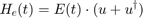
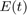
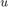

addExternalField
Adds an external Field to the simulation in a semiclassical way
Contents
Syntax
- addExternalField(Efield,name)
- addExternalField(Efield,name,fieldname)
Description
- addExternalField(Efield,name) adds a classical external field to the subsystem name. Efield must be a function pointer.
- addExternalField(Efield,name,fieldname) adds a classical external Field to the subsystem name. Efield must be a function pointer. fieldname is an optional parameter by which the external field is given a name, which is useful if the field is supposed to be removed between different simulations.
Detailed Description and Examples
The Hamiltonian which is created by a classical external field reads

where  is the time dependent classical field and  is the dipole matrix of the subsystem the external field interacts with. Any kind of classical field can be given to the function. This is done via a function pointer to a function that takes a time vector as input.
Defining a function pointer for a classical short Gaussian laser pulse
function out = Gaussianpulse( amp,td,tp,we) %td = delay time, tp = pulsewidth, we = frequency out = @inner; function exF = inner(t) exF = amp*exp(-2*log(2)*((t-td)/(tp)).^2) .* cos(we*(t-td)); %Gaussian pulse end end
ans =
@addExternalField_doc/inner
The above function outputs a function pointer to the inner function which computes the Gaussian pulse. To implement any function just replace the function body of inner(t) and the parameters at the top (Gaussianpulse(parameters)).